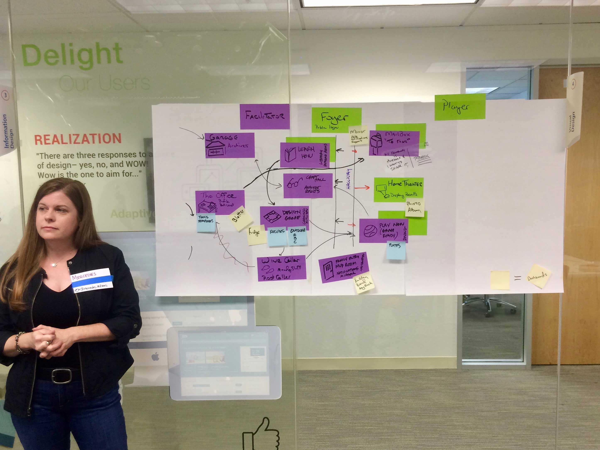
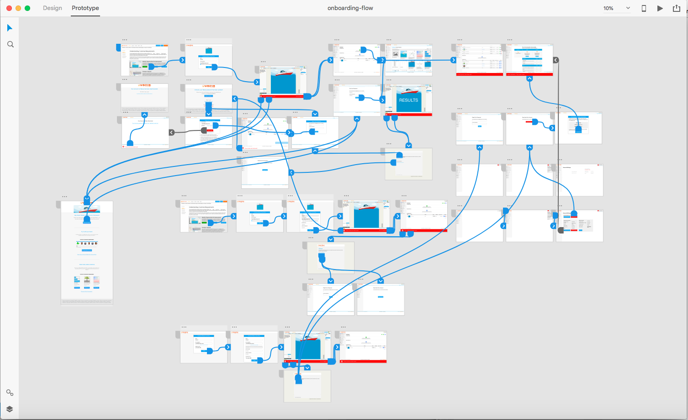

User Research


Mental Models
We asked users to how Weave could look as a physical space to give us an idea of how they see themselves navigating it.
We learned that they saw the system as a series of individual spaces: different spaces for different forum states, frameworks, framework assets, projects, etc.
Need Finding
By eliciting their complaints and requests of our users and observing them interact with the current platform, we discovered that users:
- Thought the dashboard was confusing
- Wanted larger backgrounds in forums
- Thought each framework should have a "home page"
- Want more control over their forums
- Wanted to know who is in the forum with them
Research Synthesis


The User Journey
We had a lot of info about our users. To get it down and translated to a new design as fast as possible, we mapped out a user's journey of finding Weave, to running their first forum, and exploring the platform.
Agile Storymapping
Once we had a few persona's journeys mapped on the wall, I took the primary persona's journey (Scrum Master), made it digital, and distributed it to the team. It was also printed so that everyone could edit it and add to it as we learned more about people using Weave.
Mapping
The Information Architecture (above)
The IA of Weave was at the heart of it's redesign. The CTO, founder, and I worked out how we could flatten a system with forums contained in frameworks, contained in projects to better match our user's mental models of Weave.
The Onboarding Flow
Using edited screenshots of the current platform and first-draft design ideas, I plotted the new path of a user's flow traversing:
- A new trial-to-sign-up process
- When to send and what would be in their welcome email
- What if they "tried" Weave twice without signing up?
